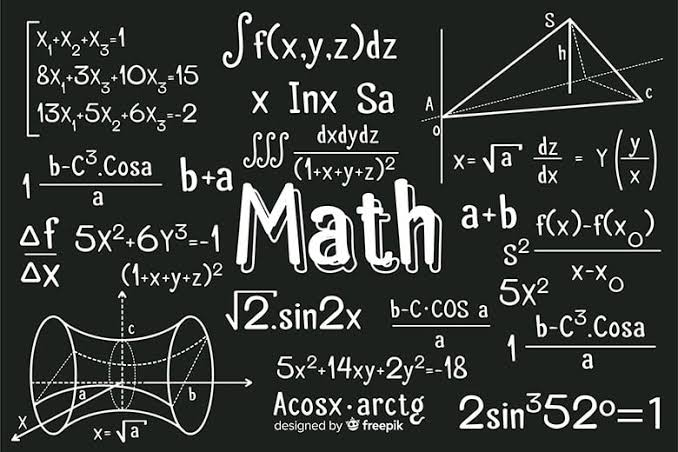

Belajar bersama

| Rumus | Penemu (fun fact) | Soal Latihan |
|---|---|---|
| Luas persegi = s x s | Bangsa Mesir Kuno menggunakan geometri untuk mengukur tanah. | Jika sisi persegi 6 cm, berapa luasnya? |
| Luas segitiga = 1/2 x a x t | Thales dikenal sebagai salah satu tokoh awal geometri Yunani. | Jika alas 8 cm dan tinggi 5 cm, berapa luasnya? |
| Luas lingkaran = pi x r x r | Nilai pi digunakan untuk menghitung ukuran lingkaran. | Jika jari-jari 7 cm, berapa luas lingkarannya? |